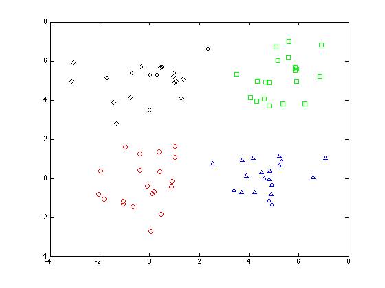
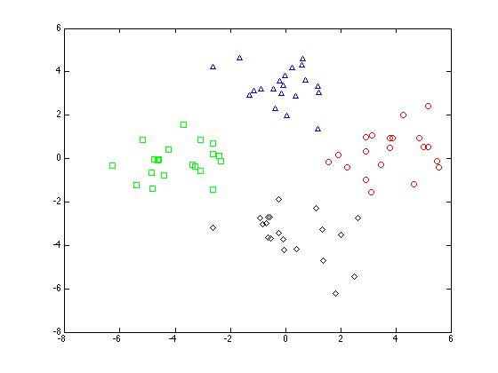

Contents
pcaexample2.m
From A First Course in Machine Learning, Chapter 6. Simon Rogers, 01/11/11 [simon.rogers@glasgow.ac.uk] Second PCA example
clear all;close all;
Generate the data
Y = [randn(20,2);randn(20,2)+5;randn(20,2)+repmat([5 0],20,1);randn(20,2)+repmat([0 5],20,1)]; % Add 5 random dimensions N = size(Y,1); Y = [Y randn(N,5)]; % labels - just used for plotting t = [repmat(1,20,1);repmat(2,20,1);repmat(3,20,1);repmat(4,20,1)];
Plot the original data
symbs = {'ro','gs','b^','kd'};
figure(1);hold off
for k = 1:4
pos = find(t==k);
plot(Y(pos,1),Y(pos,2),symbs{k});
hold on
end
 Do the PCA
Subtract the means
Y = Y - repmat(mean(Y,1),N,1); % Compute covariance matrix C = (1/N)*Y'*Y; % Find the eigen-vectors/values % columns of w correspond to the projection directions [w,lam] = eig(C);
Plot the first two components on to the original data
figure(1);hold off for k = 1:4 pos = find(t==k); plot(Y(pos,1),Y(pos,2),symbs{k}); hold on end xl = xlim; for k = 1:2 plot(xl,xl*w(1,k)/w(2,k),'k'); end ylim(xl);

Bar plot of the eigenvalues
figure(1); hold off bar(diag(lam)); xlabel('Projection dimension'); ylabel('Variance');

Plot the data projected into the first two dimensions
X = Y*w(:,1:2); figure(1);hold off for k = 1:4 pos = find(t==k); plot(X(pos,1),X(pos,2),symbs{k}); hold on end